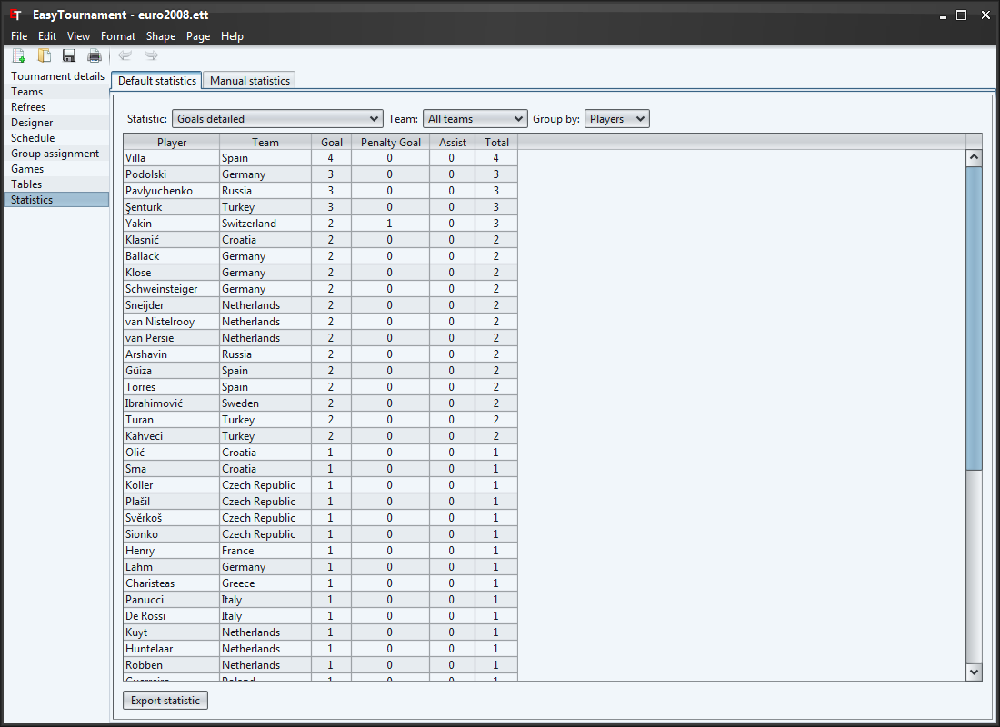

With the three drop-down lists you can evaluate various statistics, unless you have filled the Game reports.
It is possible to sort the tables by clicking on the column headers.
Number of "Goal-Points" which a team/player scored until the end of the overtime (e.g. Football: 2 Touchdowns counts 12 points).
Number of "Goal-Points" which a team/player scored until the end of the game (incl. penalty shootout) (e.g. Football: 2 Touchdowns counts 12 points).
This statistic is only available for players. Number of "Goal/Assist-Points" which a player scored until the end of the overtime (e.g. Football: 2 Touchdowns counts 12 points). The assist-player gets the same amount of points as the main scorer.
This statistic is only available for players. Number of "Goal/Assist-Points" which a player scored until the end of the game (incl. penalty shootout) (e.g. Football: 2 Touchdowns counts 12 points). The assist-player gets the same amount of points as the main scorer.
Number of "Goal-Points" per Tor-Type (see Game events) which a team/player scored until the end of the overtime (e.g. Football: 2 Touchdowns counts 12 points).
Number of "Goal-Points" per Tor-Type (see Game events) which a team/player scored until the end of the game (incl. penalty shootout) (e.g. Football: 2 Touchdowns counts 12 points).
Number of "Goal-Points" which a team/player scored for the wrong team until the end of the game.
Number of penalties of all types (see Game events) which a team/player caused (not the points which it/he induced!).
Number of penalties per type (see Game events) which a team/player caused (not the points which it/he induced!).
Additionally you are able to save the statistics with the "Export statistic" button as CVS (e.g. for spreadsheet applications as MS Excel) or as HTML file.